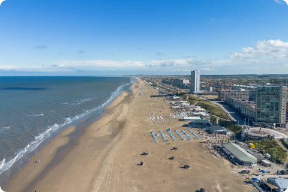
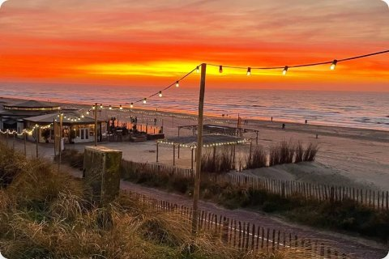
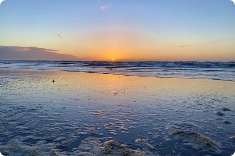
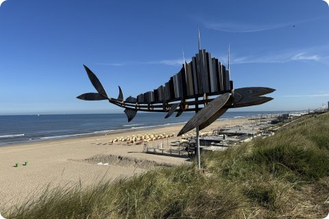

The coast has long beaches, sand dunes, and walking paths right next to the sea.
Take a short train ride to a coastal town, then a local bus to the beach.
The beach stretches for miles, with a few beach clubs near the entrance and much quieter sand further along.
Bring a windbreaker, even in summer: the wind off the sea can be stronger than you expect.

You can find a quick walk near the entrance, or a longer walk all the way to the beach. Bring water, there's not much to buy out there.

Zandvoort and Scheveningen are the easiest beaches to reach, both under an hour from the city by direct train.
Expect busy terraces in summer and quiet open sand in autumn and spring.
Both towns have plenty of places to eat, from beach pavilions to simple snack bars near the station.
Check the weather before you go. A sunny day in the city can still be cloudy at the coast.


Bike paths run along most of the coast if you want to explore further.
The dunes behind the beach have marked walking routes, with views over the sea from the higher paths.
Go early in the morning for the quietest sand and the best light for photos.
Most beach pavilions rent out deck chairs and umbrellas in summer, so you don't need to bring your own.